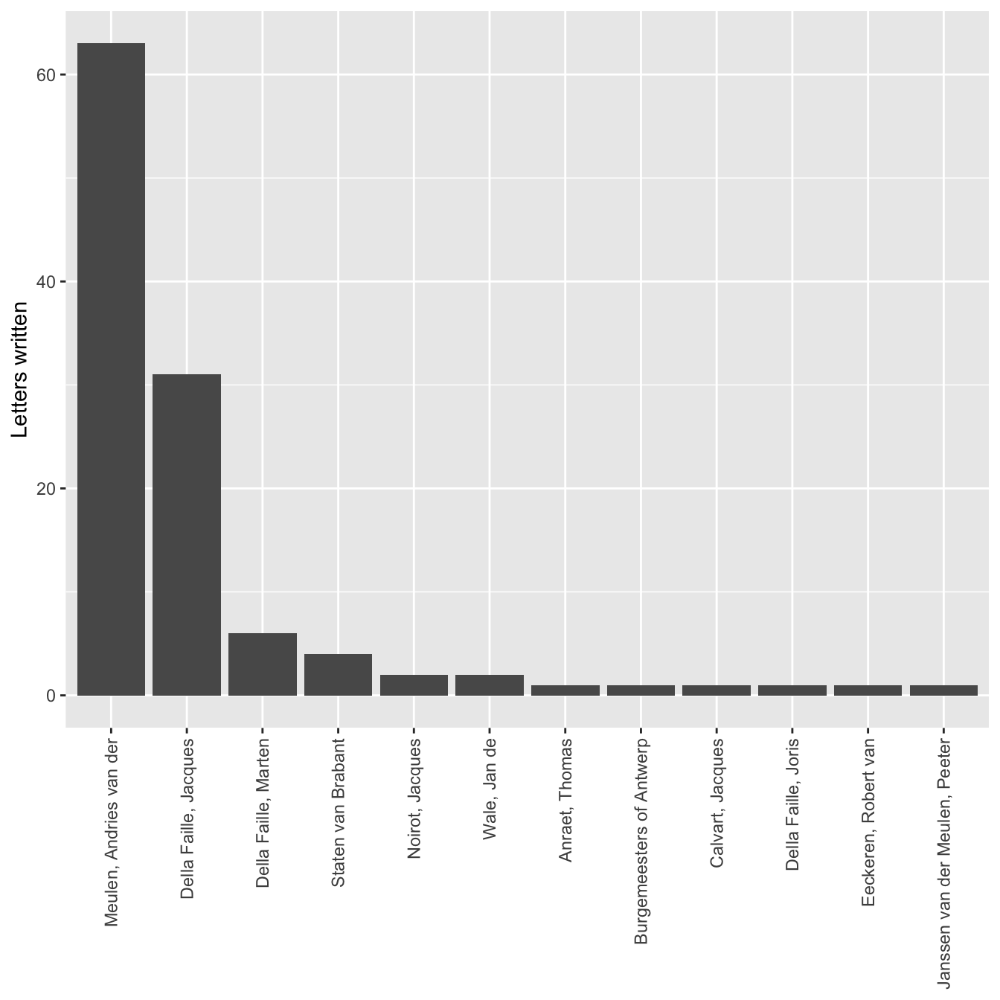

x <- 5Excel vs R: A Brief Introduction to R
With examples using dplyr and ggplot2
rstats
digitalhumanities
tidyverse
Why use R, and specifically the tidyverse, in the place of Excel for data analysis and visualization
Quantitative research often begins with the humble process of counting. Historical documents are never as plentiful as a historian would wish, but counting words, material objects, court cases, etc. can lead to a better understanding of the sources and the subject under study. When beginning the process of counting, the first instinct is to open a spreadsheet. The end result might be the production of tables and charts created in the very same spreadsheet document. In this post, I want to show why this spreadsheet-centric workflow is problematic and recommend the use of a programming language such as R as an alternative for both analyzing and visualizing data. There is no doubt that the learning curve for R is much steeper than producing one or two charts in a spreadsheet. However, there are real long-term advantages to learning a dedicated data analysis tool like R. Such advice to learn a programming language can seem both daunting and vague, especially if you do not really understand what it means to code. For this reason, after discussing why it is preferable to analyze data with R instead of a spreadsheet program, this post provides a brief introduction to R, as well as an example of analysis and visualization of historical data with R.1
The draw of the spreadsheet is strong. As I first thought about ways to keep track of and analyze the thousands of letters in the Daniel van der Meulen Archive, I automatically opened up Numbers — the spreadsheet software I use most often — and started to think about what columns I would need to create to document information about the letters. Whether one uses Excel, Numbers, Google Sheets or any other spreadsheet program, the basic structure and capabilities are well known. They all provide more-or-less aesthetically pleasing ways to easily enter data, view subsets of the data, and rearrange the rows based on the values of the various columns. But, of course, spreadsheet programs are more powerful than this, because you can add in your own programatic logic into cells to combine them in seemingly endless ways and produce graphs and charts from the results. The spreadsheet, after all, was the first killer app.
With great power, there must also come great responsibility. Or, in the case of the spreadsheet, with great power there must also come great danger. The danger of the spreadsheet derives from its very structure. The mixture of data entry, analysis, and visualization makes it easy to confuse cells that contain raw data from those that are the product of analysis. The nature of defining programatic logic — such as which cells are to be added together — by mouse clicks means that a mistaken click or drag action can lead to errors or the overwriting of data. You only need to think about the dread of the moment when you go to close a spreadsheet and the program asks whether you would like to save changes. It makes you wonder. Do I want to save? What changes did I make? Because the logic in a spreadsheet is all done through mouse clicks, there is no way to effectively track what changes have been made either in one session or in the production of a chart. Excel mistakes can have wide-ranging consequences, as the controversy around the paper of Carmen Reinhart and Kenneth Rogoff on national debt made clear.2
There are certainly legitimate reasons why people default to using spreadsheets for data analysis instead of using a programming language like R. Spreadsheets are much more inviting and comforting than any programming language could ever be to a newcomer. Learning how to program is intimidating and not something that can be done either quickly or easily. Graphical user interface (GUI) applications are simply less daunting than a command-line interface. Secondly, spreadsheets are a good tool for data entry, and it is tempting to simply move on to data analysis, keeping everything in the same document. Finally, the interactive nature of spreadsheets and the ability to create charts that change based on inputs is very attractive, even if fully unlocking this potential involves quite complex knowledge about how the program works. The first advantage of spreadsheets over programming is not easily overcome, but the latter two are built on what I believe to be a problematic workflow. Instead of using a couple of monolithic applications — often a office suite of applications — to do everything, I think that it is better to split up the workflow among several applications that do one thing well.
Creating a clear division between data entry and analysis is a major reason why analyzing data in a programming language is preferable to spreadsheet software. I still use spreadsheets, but their use is strictly limited to data entry.3 In a spreadsheet program the analysis directly manipulates the only copy of the raw data. In contrast, with R you import the data, creating an object that is a copy of the raw data.4 All manipulations to the data are done on this copy, and the original data are never altered in any way. This means that there is no way to mess up the raw data. Manipulating a copy of the data enables you to more freely experiment. All mistakes are basically inconsequential, even if they can be frustrating. A line of code that fails to produce the expected result can be tweaked and rerun — with the process repeated many times if necessary — until the expected result is returned.
Working on a copy of the raw data can even simplify the process of data entry. Analyzing tabular data in R results in the creation of multiple objects, which are referred to as data frames and can be thought of as equivalent to tables in a spreadsheet.5 The ability to split, subset, and transform the original data set into many different data frames has the benefit of drastically reducing the complexity of data entry. Instead of needing bespoke spreadsheets with multiple interrelated sheets and tables, every piece of data only needs to be entered once and all manipulations can be done in code. The different data frames that are created in the process of analysis do not even have to be saved, because they are so easily reproduced by the script of code.
The separation of data entry and data analysis severely reduces the potential for mistakes, but maybe even more significantly, the use of code for data analysis enables the creation of reproducible research that is simply not possible in spreadsheets. Reproducible research has been a hot button issue in the sciences, but there is no reason why research in the humanities should not strive to be reproducible where possible. With a programming language, the steps of the analysis can be clearly laid out in the code. The “truth” of the analysis is the code, not the objects or visuals that the code creates. Saving analysis in code has the immediate benefit that it can be easily rerun anytime that new data is added. Code can also be applied to a completely new data set in a much more transparent manner than with spreadsheets. The long-term benefit is that with code all analysis is documented instead of being hidden behind mouse clicks. This makes it easier for you to go over your own analyses long after you have finished with it, as well as for others to understand what you did and check for errors.
A Brief Introduction to R
If you have never read or written any code before, it is difficult to know what the theoretical differences between spreadsheets and coding mean in practice.6 Therefore, I want to provide an example of analyzing and visualizing data in R. I will use the example of letters sent to Daniel van der Meulen in 1585, which is a subset of the data from my project on the correspondence of Daniel van der Meulen. Before getting to the analysis, I will give a very brief introduction to R and define some key terms in order to make it more possible for anyone who has never used R or coded before to follow along. This is not meant to be a full-scale tutorial, so much as an introduction to what code in R looks like.7
R is an open-source programming language, which can be freely downloaded. Opening the downloaded program will lead you to a command-line interface devoid of any clues for what a novice should do next. Thankfully, there is a freely available application, or IDE, called RStudio, which provides a number of features to help write code. It is very much recommended to write your R code in RStudio. RStudio also has a plethora of online tutorials on their website to help you get familiar with both R and the RStudio IDE.
In either R or RStudio, the command line or console is where all of the action takes place. It is here that you enter and run the code. The foundation of working in R is the process of creating and manipulating objects of various sorts. Objects are assigned names with the assignment operator <-. Thus, if I want to assign the name x the value of 5, I write x <- 5 into the console and press return.
Nothing is printed when this operation is run, but now, if I type x into the console and hit return, the value of x will be printed. Alternatively, I could have explicitly called for the object x to be printed with the command print(x). The result is the same with either method.8
x
#> [1] 5The power of R comes with the manipulation of objects through the use of functions. Functions take in objects, possibly with a list of arguments to specify how the function works, and return another object. The objects and instructions for the functions are included within parentheses following the function name, and all instructions are separated by a comma.9 You can think of objects as nouns and functions as verbs. A simple example with the sum() function demonstrates how functions work. sum() does exactly what you would think. It takes a series of objects and returns their sum. You can see the function’s documentation by entering ?sum() on the console.10 The result of the sum() function can either be immediately printed to the console, or it can be saved by assigning it a name. Below, I assign the result of x + 10 a name and then in a second command print out the value of the newly created object.
y <- sum(x, 10)
y
#> [1] 15The flexibility of coding enables objects to be redefined endlessly. If a mistake is made or the data changes, the command can be rerun with the new values. For instance, if the value of x changes from 5 to 15 in the data, I can simply change the code for creating the x object and reassign the value of x. Below, I do this and then rerun the same sum() command, but this time I print the result directly to the console instead of assigning it to the object y.
x <- 15
sum(x, 10)
#> [1] 25Once you get a command that produces the expected result, you can save the command to an R script. A script is a text file with a suffix of .R, which you can save. Thus, you could save the commands to create the objects x and y to a file called my_script.R. The script will then be available to you whenever you want to rerun the code in the console.
R Packages: The tidyverse
Upon download, R comes with a large number of functions, which together are referred to as base R. However, the capabilities of R can be greatly extended through the use of additional packages, which can be downloaded through The Comprehensive R Archive Network (CRAN). Packages both extend what is possible in R and provide alternative ways to do things possible in base R. This can be confusing, because it means there are often a plethora of ways to do a single operation, but the extension in capability is well worth it. Particularly significant are the packages bundled together in the tidyverse package that were built by Hadley Wickham and collaborators. The tidyverse provides a set of linked packages that all use a similar grammar to work with data. The tidyverse is the best place to start if you are new to R.
The examples below show the ability to analyze and visualize data using the tidyverse packages. The analysis will mainly be done with the dplyr package and the visualization is done with ggplot. The dplyr functions all have a similar structure. The main dplyr verbs or functions are filter(), select(), arrange(), mutate(), group_by(), and summarise(). All take a data frame as their first argument. The next set of arguments are the column names on which the function performs its actions. The result of the functions is a new data frame object. The dplyr functions can be linked together, so that it is possible to perform multiple manipulations on a data frame in one command. This is done with the use of the pipe, which in R is %>%.11
The commands needed to produce a ggplot graph can be confusing at first, but the advantages of ggplot are that it is based on a grammar of graphics, which provides a systematic way to discuss graphs, and that ggplot comes with good defaults, enabling the creation of nice looking graphs with minimal code. The two main components of ggplot are geoms and the mapping of aesthetics. Geoms tell ggplot what kind of visual graphic to make, so there are separate geom functions for bar charts, points, lines, etc. Aesthetics tell ggplot which columns of the data to use for placement on the graph and for any other distinguishing aspects of these variables such as size, shape, and color. The graphs below are used to show some of the possibilities of ggplot while staying mainly within the defaults. Publication ready visualizations are possible with ggplot, but this would take more fiddling.12
An Example: Analyzing a correspondence network
With this basic overview of R out of the way, let’s move on to an example of an actual analysis of historical data to see what analysis and visualization in R looks like in practice. The data and an R script with all of the code can be found on my GitHub page, if you would like to run the code yourself.
Before doing anything with the data, it is necessary to set up our environment in R. This means loading the packages that we will be using with the library() command. To begin we only need to load the tidyverse package, which includes the individual packages that I will use for the analysis.
library(tidyverse)Once this is done, it is possible to use the functions from the tidyverse packages, beginning with reading our data into R with the read_csv() function. The code below takes a csv file from a location on my computer and loads it into R as a data frame, while saving the object under the name letters.13 The code can be read as “create a data frame object called letters from the csv file named correspondence-data-1585.csv.”
letters <- read_csv("data/correspondence-data-1585.csv")Even before anything has been done to manipulate the data, we are already in a better position than if we kept the data in Excel. Having loaded the data, all further manipulations will be done on the object letters, and no changes will be made to the correspondence-data-1585.csv file. In other words, there is no way to tamper with the database that may have taken hours (or more) to meticulously produce.
Let’s start by taking a look at the data itself by printing out a subset of the data to the console, which can be done by typing the name of the object into the console.14
letters
#> # A tibble: 114 × 4
#> writer source destination date
#> <chr> <chr> <chr> <date>
#> 1 Meulen, Andries van der Antwerp Delft 1585-01-03
#> 2 Meulen, Andries van der Antwerp Haarlem 1585-01-09
#> 3 Meulen, Andries van der Antwerp Haarlem 1585-01-11
#> 4 Meulen, Andries van der Antwerp Delft 1585-01-12
#> 5 Meulen, Andries van der Antwerp Haarlem 1585-01-12
#> 6 Meulen, Andries van der Antwerp Delft 1585-01-17
#> 7 Meulen, Andries van der Antwerp Delft 1585-01-22
#> 8 Meulen, Andries van der Antwerp Delft 1585-01-23
#> 9 Della Faille, Marten Antwerp Haarlem 1585-01-24
#> 10 Meulen, Andries van der Antwerp Delft 1585-01-28
#> # … with 104 more rowsThis tells us that letters is a tibble, which is a special kind of data frame meant to work well in the tidyverse. Though not necessarily aesthetically pleasing, the basic shape of a table of data is clear.15 The command printed out the first ten rows, while informing us that the complete data set contains 114 rows. Each letter has four pieces of information or variables: the writer of the letter, the place from which it was sent, the place to which it was sent, and the date sent. Below the column headings of writer, source, destination, and date we are informed of the type of data for each variable. This shows that the first three columns consist of character strings (chr), meaning that the data is words, while the last column contains dates, which is discussed in greater detail below.
Creating new data frames
Now that we have an idea of the basic structure of the data, it is possible to begin to analyze it. A simple question that is fairly difficult to answer in Excel — at least I do not know how to do it other than by hand — is how many different people wrote letters to Daniel during this period. The below gives a list of the writers of letters. The code is a good demonstration of basic structure of dplyr functions. The function distinct() takes a data frame, followed by the name of the column that I am interested in, returning a new data frame object with one column, which consists of the unique values from the original column.
distinct(letters, writer)
#> # A tibble: 12 × 1
#> writer
#> <chr>
#> 1 Meulen, Andries van der
#> 2 Della Faille, Marten
#> 3 Della Faille, Jacques
#> 4 Staten van Brabant
#> 5 Della Faille, Joris
#> 6 Eeckeren, Robert van
#> 7 Anraet, Thomas
#> 8 Burgemeesters of Antwerp
#> 9 Wale, Jan de
#> 10 Calvart, Jacques
#> 11 Janssen van der Meulen, Peeter
#> 12 Noirot, JacquesBecause I did not assign the output a name, the results simply printed to the console. Saving the object requires the use of the assignment operator and choosing a memorable name. With this relatively simple operation I have created my first new data frame, which I can now refer to and further manipulate by calling to writers.
writers <- distinct(letters, writer)Printing out the object shows that there are 12 people who sent Daniel letters in 1585, but another way to get this information is to run the nrow() function, which returns the number of rows in a data frame. It is possible to run the function on either the writers data frame, or to use the command that created the writers data frame. Let’s do the latter and print the result to the console. If you happen to forget the number of correspondents, the command can be typed again.
nrow(distinct(letters, writer))
#> [1] 12Once we run the commands and see that they produce results that are what we would expect from the data, it is possible to both save the commands in a script and also to reuse their structure for other pieces of information. For example, we can learn the locations from which Daniel’s correspondents sent letters and the locations in which he received letters by reusing the distinct() function and changing the column name to be manipulated.
distinct(letters, source)
#> # A tibble: 9 × 1
#> source
#> <chr>
#> 1 Antwerp
#> 2 Haarlem
#> 3 Dordrecht
#> 4 Venice
#> 5 Lisse
#> 6 Het Vlie
#> 7 Hamburg
#> 8 Emden
#> 9 Amsterdam
distinct(letters, destination)
#> # A tibble: 5 × 1
#> destination
#> <chr>
#> 1 Delft
#> 2 Haarlem
#> 3 The Hague
#> 4 Middelburg
#> 5 BremenWe can save the objects for later use by using the assignment operator and giving the data frames names.
sources <- distinct(letters, source)
destinations <- distinct(letters, destination)Linking dplyr commands together with the pipe
Thus far, I have created data frames with one variable that show the unique values of the different variables, but this has not told us anything about the number of letters sent by each author or from each location. Doing this is more complicated, because it is necessary to chain together a series of functions using the pipe. This is the case for the question of how many letters each correspondent sent. Looking at the dplyr verbs listed above you might assume that the summarise() function will create a sum of the data. We can use the summarise() function to create a new column called count that is filled with the number of observations through the n() function. In other words, the code below tells R to summarize the letters data frame and place the number of observations in a column called count.
per_correspondent <- summarise(letters, count = n())
per_correspondent
#> # A tibble: 1 × 1
#> count
#> <int>
#> 1 114Running the command and printing the result shows a result that was not what we hoped. Instead of showing letters per correspondent, the function created a column called count with a single value equal to the amount of rows in the letters data frame. However, because the objects that are made in R are ephemeral, we can simply rerun the code after reworking it. This overwrites the old per_correspondent object with one that is more useful. In the first attempt there is no notion that the goal is to group the number of letters by writer. This is the task group_by() function. To create an object with correspondents in one column and the number of letters they sent in the second column we need to group the letters data frame by writer and then summarize the letters within each group, creating the count column while doing so. The last line of the code arranges the table in descending order of letters sent by the newly created count variable. Notice that the letters data frame is listed first before any function. This is because the letters data frame is piped into each of the functions with the use of the %>% command, which can be read as “and then.”
per_correspondent <- letters %>%
group_by(writer) %>%
summarise(count = n()) %>%
arrange(desc(count))
per_correspondent
#> # A tibble: 12 × 2
#> writer count
#> <chr> <int>
#> 1 Meulen, Andries van der 63
#> 2 Della Faille, Jacques 31
#> 3 Della Faille, Marten 6
#> 4 Staten van Brabant 4
#> 5 Noirot, Jacques 2
#> 6 Wale, Jan de 2
#> 7 Anraet, Thomas 1
#> 8 Burgemeesters of Antwerp 1
#> 9 Calvart, Jacques 1
#> 10 Della Faille, Joris 1
#> 11 Eeckeren, Robert van 1
#> 12 Janssen van der Meulen, Peeter 1Looking at the result, we can see that the above changes produced the kind output we expected. The group_by() and summarise() functions worked to create a data frame in which each author is listed once. The count = n() within the summarise() function created a new variable called count that is filled with the number of letters each correspondent sent. A cursory look at the results shows that the vast majority of the letters sent to Daniel were written by his brother Andries and his brother-in-law Jacques della Faille. Andries lived in the besieged city of Antwerp for most of 1585, and Jacques lived in Haarlem, so it will hardly be surprising that if we look at the amount of letters sent from each location that Antwerp and Haarlem dominate. Having written the above code, it is possible to rework it to create a data frame called per_source, which is done by replacing the writer column in the group_by() function with the source variable.
per_source <- letters %>%
group_by(source) %>%
summarise(count = n()) %>%
arrange(desc(count))
per_source
#> # A tibble: 9 × 2
#> source count
#> <chr> <int>
#> 1 Antwerp 76
#> 2 Haarlem 30
#> 3 Venice 2
#> 4 Amsterdam 1
#> 5 Dordrecht 1
#> 6 Emden 1
#> 7 Hamburg 1
#> 8 Het Vlie 1
#> 9 Lisse 1Visualizing the data with ggplot2
While it is nice to have the two above sets of information presented in tables, it is also possible to visualize the newly created data with ggplot. The structure of ggplot functions is a bit different than that of dplyr. Like dplyr the functions are linked together, but the linking is done with the + symbol instead of %>%. With ggplot2 the three main functions are ggplot(), one or more geom_* function, which informs the type of graphical element to draw, and one or more aes() function that sets the aesthetic values of the graph. The designation of the data to use and the aes() functions can be placed within either the ggplot() function, indicating that they apply to all of the geoms, or they can be placed within individual geom_* functions in which case they will only be used for that geom. All this is to say that there are a variety of ways to produce the same visuals. The below code adds an extra function to label the axes with labs() and uses fct_reorder() from the forcats package to convert the source cities into a factor so that the bars are organized by height.
ggplot(data = per_source) +
geom_bar(aes(x = fct_reorder(source, count), y = count), stat = "identity") +
labs(x = NULL, y = "Letters written")One part of the above code that might be a bit difficult to figure out is stat = "identity". This needs to be called, because the code to create the per_source data frame actually did more work than necessary. stat = "identity" tells geom_bar() to set the height of the bars to the exact number in the count column. However, with geom_bar() only the x-axis needs to be specified. The y value is then calculated automatically based on the x value. Therefore, the below code, which uses the original letters data frame, could produce the exact same graph. Because of this, it is little trouble to change the variable for the x-axis to writers and get a completely new graph. Notice the change in the data and the deletion of the y variable and stat. The data for the x-axis is again converted to a factor, but this time with fct_infreq() to automatically create and order the factor by the frequency of observations. One problem with the correspondents data is the length of the names. Therefore, this command makes changes to the theme() function. The arguments in the function are used to place the correspondent names at a ninety degree angle so that they do not overlap.
ggplot(data = letters) +
geom_bar(aes(x = fct_infreq(writer))) +
labs(x = NULL, y = "Letters written") +
theme(axis.text.x = element_text(angle = 90, hjust = 1, vjust = 0.5))
Working with dates: lubridate
Now, let’s investigate the dates column. Dealing with dates is often tricky. To facilitate this analysis we need to load the lubridate package. lubridate is another package created by Hadley Wickham, which fits into the tidyverse manner of dealing with data. It is not among the packages loaded with library(tidyverse), and so it is necessary to load it separately.
library(lubridate)Since the letters in this data set were all received in one year, it would be interesting to see how many letters Daniel received each month. This question is particularly interesting, because in 1585 Daniel’s home city of Antwerp was under siege by Spanish troops, and Daniel was serving as a representative for his city to the rebels in Holland. It is also an interesting issue of analysis, because while the letters data frame contains information about the month the letters were sent, there is no month column. This prevents us from using the group_by() and summarise() workflow that we have developed. The answer comes from the lubridate package, which includes a function called month(). This function extracts the month from a date object, which we know the date column is, because it is identified as such when we have printed the letters data frame. The goal is to create a new column called month. This is done through the dplyr function mutate(), which creates the column and then applies the month() function to each of the dates. The remaining code is similar to that used above, but now the column we want to group_by() and summarise() is the newly created month column.
per_month <- letters %>%
mutate(month = month(date)) %>%
group_by(month) %>%
summarise(count = n())
per_month
#> # A tibble: 12 × 2
#> month count
#> <dbl> <int>
#> 1 1 11
#> 2 2 14
#> 3 3 18
#> 4 4 9
#> 5 5 14
#> 6 6 9
#> 7 7 9
#> 8 8 14
#> 9 9 10
#> 10 10 2
#> 11 11 1
#> 12 12 3Looking at the result of this code, a problem is immediately apparent. The number of letters per month is as expected, but the months are returned as numbers, which is less than ideal. However, by looking at the documentation for lubridate by typing ?month() into the console, it is possible to see that what needs to be done is to change the label argument to TRUE from the default of false.
per_month <- letters %>%
mutate(month = month(date, label = TRUE)) %>%
group_by(month) %>%
summarise(count = n())
per_month
#> # A tibble: 12 × 2
#> month count
#> <ord> <int>
#> 1 Jan 11
#> 2 Feb 14
#> 3 Mar 18
#> 4 Apr 9
#> 5 May 14
#> 6 Jun 9
#> 7 Jul 9
#> 8 Aug 14
#> 9 Sep 10
#> 10 Oct 2
#> 11 Nov 1
#> 12 Dec 3Now that we have the data in a good form we can plot it by making another bar chart.
ggplot(data = per_month) +
geom_bar(aes(x = month, y = count), stat = "identity") +
labs(x = 1585, y = "Letters sent")The graph shows a peak in March of 1585 when Antwerp was in an extremely vulnerable position and it was more important than ever that it receive military and monetary assistance from the rebels in Holland. Another peak is reached in August when Antwerp surrendered, forcing Daniel and his family members to go into exile. The letters declined beginning in October, when Daniel left Holland to live in exile with his family in Bremen.
As a fun aside, it is also possible to see what day of the week the letters were sent. Luckily, the data comes from 1585, three years after the creation of Gregorian Calendar, and the areas from which the letters were sent had already transitioned to the new calendar. This means that they were using the same calendar as we do now, as opposed to a place like England, which only adopted the Gregorian Calendar in 1752. Therefore, we do not have to worry about adding 10 days to move from the old calendar to the new calendar.
per_wday <- letters %>%
mutate(wday = wday(date, label = TRUE)) %>%
group_by(wday) %>%
summarise(count = n())
per_wday
#> # A tibble: 7 × 2
#> wday count
#> <ord> <int>
#> 1 Sun 7
#> 2 Mon 16
#> 3 Tue 20
#> 4 Wed 16
#> 5 Thu 22
#> 6 Fri 16
#> 7 Sat 17We can even create the chart using the original letters data frame and call the wday() function within the definition of the x variable.
ggplot(data = letters) +
geom_bar(aes(x = wday(date, label = TRUE))) +
labs(x = 1585, y = "Letters sent")Finally, let’s see who sent Daniel letters on Sundays. We can use the filter() function, which returns rows that match a certain argument. The below code uses the knowledge that without labels, Sunday is equivalent to 1. The code is also written in a slightly different style. Even though only a single function is called, %>% is used to pipe the data frame into the function, which cleans up the function call slightly.
letters %>%
filter(wday(date) == 1)
#> # A tibble: 7 × 4
#> writer source destination date
#> <chr> <chr> <chr> <date>
#> 1 Della Faille, Jacques Haarlem Delft 1585-02-10
#> 2 Meulen, Andries van der Antwerp Delft 1585-03-31
#> 3 Meulen, Andries van der Antwerp Delft 1585-04-28
#> 4 Della Faille, Jacques Haarlem Delft 1585-05-12
#> 5 Wale, Jan de Venice Haarlem 1585-06-23
#> 6 Della Faille, Jacques Haarlem Delft 1585-08-18
#> 7 Della Faille, Jacques Haarlem Delft 1585-09-08Combining data for correspondents and dates
The group_by() and summarise() workflow developed so far results in data frames with two columns and thus only tells us about one variable from the data at a time. We can get a better understanding of Daniel’s network by looking into how many letters each writer sent per month, which would involve the creation of a data frame with three columns. One advantage of using code is that it is often relatively simple to take a functioning line of code and tweak it to create a different result. Here, I take the line of code that produced per_month and alter it by adding the writer variable to the group_by function. Now the code will group the letters written by each correspondent per month and then count them. Notice how the dimensions of the resulting data frame has changed.
correspondent_month <- letters %>%
mutate(month = month(date, label = TRUE)) %>%
group_by(writer, month) %>%
summarise(count = n()) %>%
arrange(desc(count))
#> `summarise()` has grouped output by 'writer'. You can override using the
#> `.groups` argument.
correspondent_month
#> # A tibble: 34 × 3
#> # Groups: writer [12]
#> writer month count
#> <chr> <ord> <int>
#> 1 Meulen, Andries van der Mar 12
#> 2 Meulen, Andries van der Jan 10
#> 3 Meulen, Andries van der Feb 9
#> 4 Meulen, Andries van der Jul 8
#> 5 Della Faille, Jacques Aug 7
#> 6 Della Faille, Jacques Sep 7
#> 7 Meulen, Andries van der Apr 7
#> 8 Meulen, Andries van der May 7
#> 9 Della Faille, Jacques May 5
#> 10 Meulen, Andries van der Jun 5
#> # … with 24 more rowsWith this new object called correspondent_month it is possible to add to the bar chart on letters per month, by filling in the bars with letters per correspondent in each month. The only difference in the code below from the earlier chart is the inclusion of fill = writer in geom_bar() and then giving it a label in labs().
ggplot(data = correspondent_month) +
geom_bar(aes(x = month, y = count, fill = writer), stat = "identity") +
labs(x = 1585, y = "Letters sent", fill = "Correspondents")
A bar graph is only one of many different geoms made available through ggplot, so let me finish by using the same information to produce a line graph with points showing the amount of letters each correspondent sent in a month. The structure of the command is slightly different here, because I place the aes() function in the ggplot() function. This is done because the same aesthetics will be used by both geom_point() and geom_line(). In the geom_point() function I increase the size of all of the points so that they are more clearly visible. The geom_line() function adds a new aesthetic for group, which tells the function how to connect the lines.
ggplot(data = correspondent_month, aes(x = month, y = count, color = writer)) +
geom_point(size = 3) +
geom_line(aes(group = writer)) +
labs(x = 1585, y = "Letters sent", color = "Correspondents")These two graphs provide different ways to visualize the data. Both give a clearer picture of the development of Daniel’s correspondence over the course of 1585. Up until September, Andries was Daniel’s most signifiant correspondent. After the fall of Antwerp, the two lived together in Bremen, forestalling any need to communicate by correspondence. On the other hand, in the second half of the year, Daniel’s correspondence picked up with his brother-in-law, Jacques.
Conclusion
The examples above only display a small fraction of the analysis and visualization capabilities of R. More fully developed visualizations with a larger set of the data used here can be seen on the the Projects page of this website, including an interactive map of the letters that can be filtered by date. Going from no coding experience to the production of visualizations in R is by no means easy, though there is an ever-growing set of resources designed to make the process as easy as possible. This post is part of my attempt to add to these resources from the perspective of a historian. In future posts I will build on the foundation provided here. In particular, the above analysis did not take advantage of the geographic nature of the data. I will discuss the process of geocoding the data and mapping it in an upcoming post.
Footnotes
This post concentrates on the basic aspects of data analysis and visualization using the popular dplyr and ggplot packages for R. In future posts, I will discuss more aspects of R.↩︎
Episode 9 of the Not So Standard Deviations podcast has a good discussion of Excel vs R, which helped me think through my own thoughts on this subject.↩︎
My workflow is to enter data into Numbers, export it into a csv file, and then analyze with R. I have found data entry directly into csv too clunky, and so spreadsheets still have a place in my life.↩︎
There are a variety of different data types in R, but in this post I will concentrate on tabular data, or data frames, because that is the form of data derived from spreadsheet and most used within the humanities and social sciences.↩︎
See the explanation and examples below on how objects in R are created and manipulated.↩︎
This was the position that I was in only a couple of months ago.↩︎
If you are interested in learning how to use R, two good places to start are Garrett Grolemund and Hadley Wickham, R for Data Science and Roger Peng, R Programming for Data Science. Both are available for free and cover the topics that I discuss here in much greater detail.↩︎
Do not worry about the
[1]in the printed output. This merely informs us that this is the first number in the objectx. Behind the scenes in Rxis not simply a number but a vector of numbers of length one.↩︎A common frustration when learning to code is how persnickety computers are about typos and grammar. If a command does not work, it is likely because there is a typo somewhere.↩︎
If you want to know how a function works or what arguments are necessary to run the function, you can always access a function’s documentation with
?function_name(). The documentation for many functions tend to be jargon heavy, but most also contain examples of how to use the function.↩︎The best resource for learning about these
dplyrfunctions is Chapter 5 of Grolemund and Wickham, R for Data Science.↩︎There are many resources on learning
ggplot. Chapter 3 of Grolemund and Wickham, R for Data Science is a good place to start. Another invaluable resource for ggplot that is still under development is Kieran Healy’s Data Visualization for Social Science↩︎Remember that a data frame is essentially a table. To be more precise, in this case, the
read_csv()function produces a tibble, which is a special kind of data frame.↩︎One advantage of tibbles over default data frames is that tibbles are smart about printing out a subset of the data to the console instead of all of the content. The latter approach becomes messy when data frames have hundreds or thousands of rows.↩︎
RStudio comes with its own viewer, enabling you to view the contents of data frames in a manner that replicates the experience of a spreadsheet.↩︎